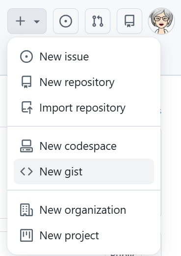
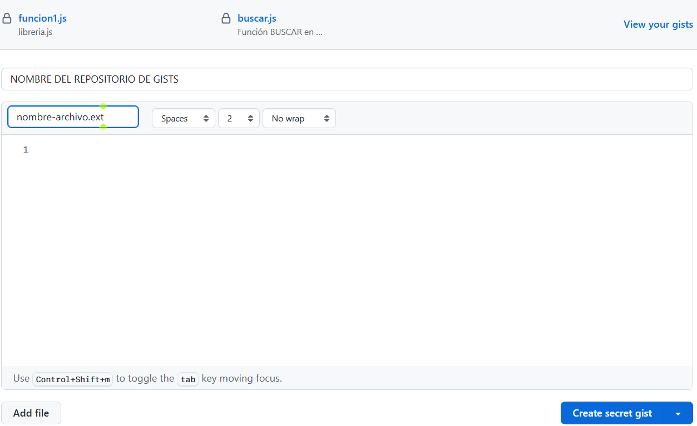
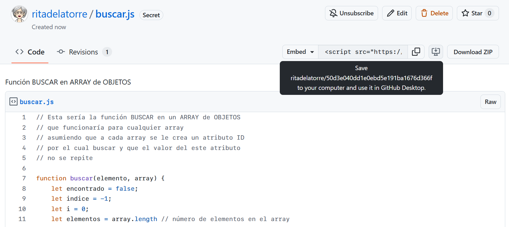

Un Gist es una herramienta de GitHub diseñada para compartir y gestionar fragmentos de código, notas o cualquier archivo de texto de forma sencilla, sin necesidad de crear un repositorio completo.
Cada Gist es técnicamente un mini repositorio independiente de Github, lo que permite que sea clonado, bifurcado (forked) y tenga un historial de versiones automático.
Básicamente, los Gists se utilizan como una colección de notas o fragmentos de código (denominados snippets ) para compartir: funciones reutilizables, configuraciones o ejemplos de código que no justifican la estructura de un proyecto entero.
Los Gists pueden ser públicos (visibles para todos) o secretos (solo accesibles mediante un enlace directo), y se pueden fijar al perfil de usuario para mayor visibilidad.
+ Create new...
2. Verás las siguientes opciones. Selecciona la opción <> New gist

3. Aparecerá la siguiente pantalla: (he incluido en la misma el los datos a llenar.)

4. Para crear otro Gist, en el mismo repositorio de Gists, haz clic sobre el botón
Los Gist de un repositorio, se pueden copiar de diferentes maneras:
Download ZIP )RawLa URL copiada tendrá el siguiente aspecto:
https://gist.github.com/ritadelatorre/50d3e040dd1e0ebd5e191ba1676d366f

Pasos:
- GitHub generará automáticamente una etiqueta <script> que contiene la URL del Gist.
El código resultante tiene la siguiente estructura:
<script src="https://gist.github.com/USUARIO/ID_DEL_GIST.js"></script>
<script src="https://gist.github.com/ritadelatorre/50d3e040dd1e0ebd5e191ba1676d366f.js"></script>
copiar.Ejemplo de código
En este ejercicio, crearemos una clase Gist que nos permitirá crear un objeto gist y un array de objetos gists, al cual denominaremos snippets
La clase Gist deberá tener los siguientes attributos: idInterno, usuario,idGithub,lenguaje,descripcion
Ejemplo de un objeto gists
gist = new Gist(1,
'ritadelatorre',
'50d3e040dd1e0ebd5e191ba1676d366f',
'js',
'Buscar con while en un array de Objetos')
Agregar a la clase Gist, métodos para:
Embedy devolverlo con returnHacer un CRUD que permita hacer todas las operaciones con el array de snippets